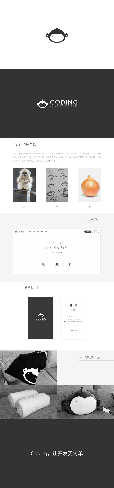
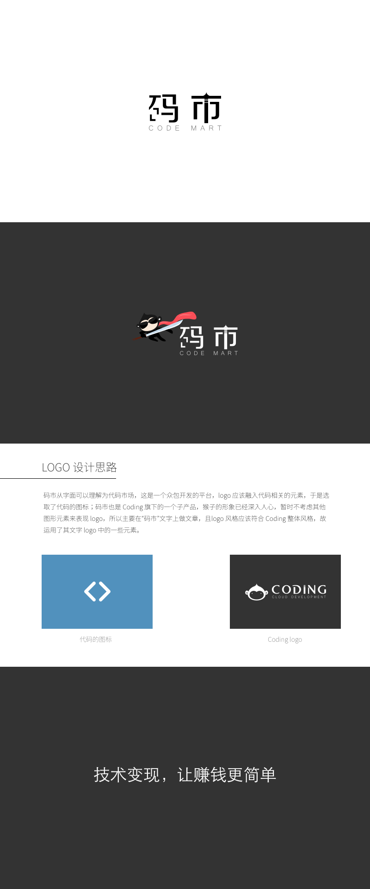

-
Logo @Coding
- 这是一个云端开发服务的网站，主要对象是开发者，也就是我们经常说的程序猿，用可爱的小猴子来代表这一群人显得很贴切。现在这个造型也是在手绘过程中碰撞出来的，是不是很像一个洋葱头？现在我们会叫这只小猴子为“萌萌哒洋葱猴”。
- Logo Try it
-
Logo @Coding 码市
- 码市从字面可以理解为代码市场，这是一个众包开发的平台，logo 应该融入代码相关的元素，于是选取了代码的图标；码市也是 Coding 旗下的一个子产品，猴子的形象已经深入人心，暂时不考虑其他图形元素来表现 logo，所以主要在“码市”文字上做文章，且logo 风格应该符合 Coding 整体风格，故运用了其文字 logo 中的一些元素。
- Logo Try it
{% if site.duoshuo_username %}
-